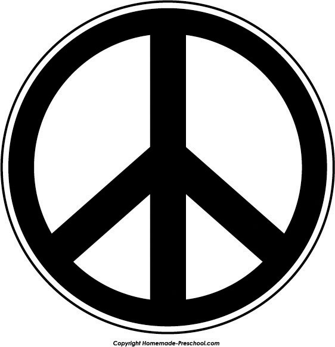

The three major sociological perspectives offer some very different understandings of war and terrorism. You might agree with some of their assumptions and disagree with other assumptions, but together they capture the major dimensions of these two forms of armed conflict. Table 16.1 "Theory Snapshot" summarizes these assumptions.
Table 16.1 Theory Snapshot
| Theoretical perspective | Major assumptions |
|---|---|
| Functionalism | War and terrorism serve several important functions. For example, they increase social solidarity as a society unites to defeat a perceived enemy. Some wars have also helped preserve freedom and democracy. |
| Conflict theory | War and militarism primarily advance the interests of the military-industrial complex and take billions of dollars from unmet social needs. |
| Symbolic interactionism | Symbols such as the flag play an important role in marshaling support for war. Definitions of several concepts also play an important role in public opinion regarding war and terrorism. |
Recall that functionalism emphasizes the usefulness of certain behaviors and social institutions for many aspects of society. One of functionalism’s most important insights is that social problems might actually be useful in this way, however many difficulties they might otherwise cause. To use an example from Chapter 1 "Understanding Social Problems", crime certainly causes many problems, but it also creates hundreds of thousands of jobs in law enforcement, courts and corrections, home security, and other sectors of the economy that deal with crime.
In this spirit, functionalism similarly emphasizes the ways in which war and terrorism are useful for society, however horrible they are in so many other ways. Perhaps the first sociologist to make this point for war was Robert E. Park, the 1925 president of the American Sociological Association (which was then called the American Sociological Society—a name that was later changed because of its acronym!). In January 1941, less than a year before the bombing of Pearl Harbor, Park published an influential essay called “The Social Function of War: Observations and Notes,” in a leading sociology journal (Park, 1941).Park, R. E. (1941). The social function of war: Observations and notes. American Journal of Sociology, 46, 551–570.
Park’s essay outlined several functions of war. First, war helps resolve international disputes over matters such as territorial boundaries and religious and other ideologies. No matter what one might think of war, historically it has resolved disputes between nations, with the winner of the war winning the dispute. Even though very few people would say that war is a preferred method for resolving a dispute, it still has performed this function.
Second, war generates a stronger sense of social bonding and solidarity within the societies that are at war. Having a common enemy, people within a society at war “come together” with a shared purpose and feel more united and patriotic than before. This dynamic is called the external conflict/internal cohesion process (Markides & Cohn, 1982).Markides, K. C., & Cohn, S. F. (1982). External conflict/internal cohesion: A reevaluation of an old theory. American Sociological Review, 47, 88–98. Although Park did not discuss terrorism, this form of armed conflict can also create social solidarity. In the days and weeks after 9/11, Americans came together as one people, and the president of France famously said, “We are all Americans.”
Third, wars many centuries ago, such as those in which ancient Rome in essence formed and grew from conquering various tribes, led to the development of the nation-state as a political institution. As these tribes came under the rule of nation-states, their separate tribal identities weakened as they gradually identified themselves as one people belonging to their nation-state; Park (p. 569) referred to this process as “the coming-together and integration of races and peoples.” Moreover, the size and resources of these nation-states allowed them to generate scientific, cultural, and political advances that played an important role in world history. War, then, indirectly contributed to these advances. Although nation-states still might have eventually developed even without war, their development was accelerated by war.
Other functions of war can also be cited. Some wars, including the American colonists’ war against England and the Allies’ war against Hitler and Japan, have helped maintain and establish freedom and democracy. In the past and also today, war and military service have also provided important opportunities for jobs and career advancement for people of color and women. Related to this, the US military provides millions of jobs annually and is a ready form of employment for people who only have a high school education. More generally, the military and the defense industry are certainly important components of the US economy, and military spending in some eras has helped stimulate the US economy. In perhaps the most notable example of this effect, spending for World War II is commonly credited with helping to lift the United States out of the Great Depression (Shiller, 2012).Shiller, R. J. (2012, January 15). Spend, spend, spend. It’s the American way. New York Times, BU3.
In a final function, weapons research and other types of military research have contributed to scientific and technological development in general. For example, military research played a key role in the early development of the Internet.
Conflict theory’s perspective on war and the military is decidedly more negative than that of functionalism. There are actually many different views within conflict theory about war and the military, but three related views stand out. The first view echoes President Eisenhower’s concern over the power and influence of the military-industrial complex. According to conflict theory, the United States spends so much on the military and even goes to war because military officials, defense contractors, and political leaders work hand-in-hand in a rather cozy relationship. Although they may profess that their actions are meant to keep the nation safe, their ultimate goal is to enhance their political power and financial well-being.
The most famous critique of the military-industrial complex from a conflict theorist is undoubtedly that of sociologist C. Wright Mills in his book The Power Elite (1956).Mills, C. W. (1956). The power elite. New York, NY: Oxford University Press. According to Mills, the power eliteC. Wright Mills’s term for the government, big business, and the military, which he said collaborate to advance their own interests. is composed of government, big business, and the military, which together constitute a ruling class that controls society and works for its own interests, not for the interests of the citizenry. Members of the power elite, Mills said, see each other socially and serve together on the boards of directors of corporations, charitable organizations, and other bodies. When cabinet members, senators, and top generals and other military officials retire, they often become corporate executives; military officials in particular join defense contractors. Conversely, corporate executives often become cabinet members and other key political appointees, and defense industry executives often end up in the Pentagon. This circulation of the elites creates a rather cozy relationship that helps ensure their dominance over American life and in particular ensures that the military-industrial complex has an untold influence over economic and foreign policy.
A more recent critique of the military-industrial complex and foreign policy by sociologist Mark C. Worrell (2011, p. 51)Worrell, M. P. (2011). Why nations go to war: A sociology of military conflict. New York, NY: Routledge. bluntly stresses the role played by the desire for corporate profits: “War is business and it is profitable…What we learned in the aftermath of World War II is that mass destruction is great for corporate profits…War is driven by corporate profits and corporations drive politics.” According to Worrell and other contemporary critics of what they call the warfare state, the United States now has a permanent war economy. In their view, the war on terrorism after 9/11 and the wars in Iraq and Afghanistan “have only deepened the trend toward ever more concentrated state, corporate, and military power in a society that ostensibly embraces democratic values” (Boggs, 2011, p. ix).Boggs, C. (2011). Empire versus democracy: The triumph of corporate and military power. New York, NY: Routledge.
The second view of conflict theory concerns imperialismThe use of military power and other means to extend a nation’s influence and control over other nations., or the use of military power and other means to extend a nation’s influence and control over other nations. This view, held by the more radical proponents of conflict theory, argues that war and other military ventures by the United States are done for the sake of imperialism rather than for noble goals such as the preservation and extension of democracy. In this view, the United States wages war and engages in other military actions to gain access to oil and other resources of other societies, with the ultimate aim of enriching multinational corporations and other parties. The characterization does not hold true for World War II, conflict theorists concede, but they argue it holds true for many and perhaps most other US wars and military actions, historically and today. In their view, the wars in Iraq and Afghanistan in particular were fought under false pretenses to maintain adequate oil supply and more generally to extend America’s military and economic influence around the world (Worrell, 2011).Worrell, M. P. (2011). Why nations go to war: A sociology of military conflict. New York, NY: Routledge.
A third view of conflict theory criticizes the size of the military budget and emphasizes the billions of dollars it takes from social needs such as poverty and climate change. As sociologist Carl Boggs (2011, p. 17)Boggs, C. (2011). Empire versus democracy: The triumph of corporate and military power. New York, NY: Routledge. argues, “The war economy, for its part, devours roughly one trillion dollars in material, technological, and human resources yearly…, ensuring a pattern of waste, destruction, uneven development, eroded public infrastructures, and decimated social programs. Decaying American cities have become a supreme legacy of the warfare system.” We return to this issue later in this chapter.
Symbolic interactionist writing on war features several emphases. One theme concerns the perceptions and experiences of people involved in war: soldiers, civilians, and others. There are many moving accounts, for example, both real and fictitious, of soldiers’ life on the battlefield and after they come home from war.
Figure 16.1 International Peace Symbol
Source: Clip art: http://www.homemade-preschool.com/image-files/peace-sign-black.png.
A second emphasis concerns the use of symbols to marshal support for war or protest against war. Symbols such as the flag evoke feelings of patriotism, perhaps especially when a nation is at war. The president and other politicians typically display a flag when they give major speeches, and it would be unthinkable for a flag not to be showing when the speech is about war or the threat of war. During the Vietnam War, protesters sometimes flew the US flag upside-down (the international symbol of distress) to show their hatred of the war, and some protesters also burned the flag—an act that is almost guaranteed to provoke outrage and hostility from onlookers.
Other symbols can also be important. When the United States invaded Iraq in March 2003, millions of Americans put magnetic yellow ribbons on their cars, SUVs, and pickup trucks to show their support for the troops. The largest manufacturer of the ribbons sold more than one million monthly a year after the war began. However, sales slipped as support for the war declined, and four years after the war numbered only 4,000 monthly (Ward, 2007).Ward, A. (2007, March 2). Yellow ribbons dwindle with war support. The Financial Times. Retrieved from http://www.ft.com/intl/cms/s/0/4793da48-c8f7-11db-9f7b-000b5df10621.html#axzz1uqyZTxHR. Another ubiquitous symbol during the Vietnam War was the so-called international peace symbol (see Figure 16.1 "International Peace Symbol"), originally designed in the late 1950s to symbolize concern over nuclear weapons. Vietnam War protesters wore this symbol on their clothing, and many put peace symbol decals on their motor vehicles, book bags, and other possessions.
A third emphasis of symbolic interactionism concerns how concepts related to war and terrorism come to be defined in ways that advance the goals of various parties. For example, a key goal of the military in basic training is to convince trainees that people they may face on the battlefield are the enemy and, as such, an appropriate target for killing. Related to this goal is the need to convince trainees that when they kill an enemy soldier, the killing is a justified killing and not murder. Similarly, the military often refers to civilian deaths or wounding as collateral damage in a conscious or unconscious attempt to minimize public horror at civilian casualties.
Another definitional issue concerns terrorism. As we shall discuss later, the definition of terrorism is very subjective, as actions that some people might regard as terrorism might be regarded by other people as freedom fighting or some other much more positive term than terrorism.
With this theoretical background in mind, we now turn to several issues and problems of war and terrorism.